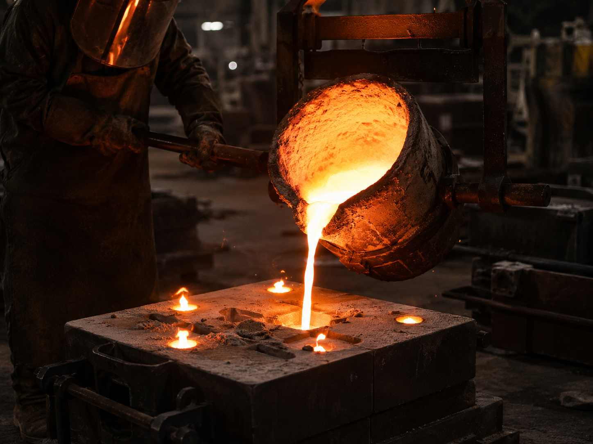

High Green Compression Strength (GCS)
Korvanto Bentonite
Korvanto Bento Foundry
High-Performance Bentonite for Foundry & Green Sand Casting
 Export Ready
Export Ready

Overview
Product Overview
KORVANTO BENTO FOUNDRY™ is a premium-grade sodium and blended bentonite developed for green sand molding applications in ferrous and non-ferrous foundries. Carefully processed to deliver excellent bonding strength thermal stability plasticity and sand reusability it helps produce strong molds with superior dimensional accuracy and surface finish.
Designed for modern foundry operations our foundry bentonite improves mold integrity reduces casting defects enhances sand system performance and supports consistent production across both manual and automated molding lines.
Performance
Key Benefits
Excellent Wet Tensile Strength (WTS)
Superior Thermal Stability
Strong Bonding & Plasticity
Improved Mold Edge Strength and Definition
Reduced Casting Defects such as Scabbing Erosion and Blowholes
Better Sand Reusability and Lower Consumption
Consistent Performance in High-Pressure Molding Systems
Suitable for Both Ferrous and Non-Ferrous Castings
Technical Data
Representative Technical Specifications
Foundry Grade Bentonite Powder
| Particulars | F30 | F32 | F35 |
|---|---|---|---|
| Moisture | 10–12% | 10–12% | 10–12% |
| pH | 9 to 9.5 | 9.5 to 10 | 9.5 to 10 |
| Swelling Capacity (At 2 gms/100ml water) | 30 to 32 | 32 to 35 | 35 to 40 |
| Gelling Time in minutes (10% Bentonite Slurry) | Instant | Instant | Instant |
| Gel Formation Index (2.4 gms Al₂O₃ 0.2 gms MgO and 1.4 gms Bentonite) | 65 to 75 | 75 to 80 | 80 to 85 |
| Liquid Limit | 550 to 650 | 650 to 800 | 800 to 900 |
| Green Comp Strength in PSI (Fresh sand 40/60 AFS; Bentonite/Water 5/2) | 9.5 to 10.5 | 10.5 to 11 | 11.0 to 12.0 |
| Methylene Blue Value (Mg of MB/100 gm of Bentonite) | 370 to 385 | 390 to 405 | 405 to 415 |
| Sieve Analysis — % Passing through 100 Mesh | 98 | 98 | 98 |
| Sieve Analysis — % Passing through 200 Mesh | 86 | 86 | 86 |
Representative values shown above. Full Technical Data Sheet (TDS) Certificate of Analysis (COA) and additional documentation are available upon request.
Chemical Properties
| Elements | SiO₂ | Al₂O₃ | Fe₂O₃ | CaO | MgO | Na₂O | K₂O | TiO₂ | L.O.I |
|---|---|---|---|---|---|---|---|---|---|
| Result (%) | 45–55 | 18–25 | 2–4 | 1–2 | 2–4 | 2–4 | 0–1 | 1–3 | 8–12 |
Physical Properties
| Properties | Bulk Density | Specific Gravity | Refractive Index | Fusion Point | BEC meq/100gm |
|---|---|---|---|---|---|
| Result | 0.9 – 1.1 gm/cc | 2.4 – 2.8 | 1.547 – 1.557 | 1300° – 1400° C | 80 – 110 |
Custom foundry grades can be supplied according to casting type sand system requirements and foundry operating conditions. Economy Standard and Premium grades available.
Industry Use
Applications
Grades
Available Grades

Economy Grade (30 Swelling)

Standard Grade (32 Swelling)

Premium Grade (35 Swelling)
Custom Grade
Bespoke Supply
Custom Grade
Custom Manufacturing Options
Korvanto supplies bento foundry according to customer requirements including:
Discuss Custom Specs →Particle Size Distribution
Custom Specifications & Grades
Application-Specific Formulations
Quality & Purity Requirements
Custom Packaging
Export Documentation Support
Export Supply
Packaging Options
Product Support
Frequently Asked Questions
What is Foundry Grade Bentonite
Foundry Grade Bentonite is a high-performance binder used in green sand molding systems for the production of ferrous and non-ferrous metal castings. It improves sand bonding mold strength plasticity and overall molding performance helping foundries achieve consistent casting quality.
Why is bentonite used in foundries
Bentonite acts as the primary binder in green sand molding systems. When mixed with silica sand and water it develops the necessary bonding strength plasticity and moisture retention required to produce stable molds capable of withstanding molten metal during casting.
What are the advantages of KORVANTO BENTO FOUNDRY
Korvanto BENTO FOUNDRY offers several benefits including:
Excellent green compression strength
High bonding efficiency
Improved mold plasticity
Good thermal stability
Consistent moisture retention
Reduced sand consumption
Reliable batch-to-batch consistency
What industries use Foundry Grade Bentonite
Korvanto BENTO FOUNDRY is widely used in:
Iron Foundries
Steel Foundries
Automotive Casting
Engineering Castings
Machinery Components
Agricultural Equipment
Pump & Valve Castings
General Metal Casting Industries
What types of foundry bentonite does Korvanto offer
Korvanto can supply Foundry Grade Bentonite in different grades to meet various molding sand requirements. Product specifications can be customized based on casting type molding process and customer requirements.
Can Korvanto supply customized foundry grades
Yes. Customized grades can be supplied based on customer specifications including green strength dry strength active clay content moisture requirements particle size and other application-specific parameters subject to technical feasibility.
What packaging options are available
Korvanto BENTO FOUNDRY is available in:
25 kg Bags
50 kg Bags
Jumbo Bags (FIBC)
Palletized Loads
Bulk Export Shipments
Packaging can be tailored to customer and export requirements.
What technical documents are available
Korvanto can provide:
Technical Data Sheet (TDS)
Certificate of Analysis (COA)
Safety Data Sheet (SDS/MSDS) where applicable
Export documentation upon request
Can particle size be customized
Yes. Particle size distribution can be customized based on customer requirements and molding process specifications subject to production feasibility.
How should Foundry Grade Bentonite be stored
Store the product in a clean dry and well-ventilated area away from moisture and contamination. Bags should remain sealed until use to help maintain product quality and performance.
Can Korvanto supply export quantities
Yes. Korvanto supplies Foundry Grade Bentonite to customers worldwide with export-ready packaging documentation support and flexible shipment options.
Is third-party inspection available
Yes. Independent third-party testing and inspection can be arranged upon customer request prior to dispatch subject to mutually agreed inspection requirements.
Is KORVANTO BENTO FOUNDRY suitable for both iron and steel foundries
Yes. Foundry Grade Bentonite can be supplied for a variety of green sand molding applications in iron steel and other metal casting operations. The appropriate grade depends on the casting process sand system and customer specifications.
Can Korvanto recommend the right grade for my foundry
Yes. By understanding your casting process metal type molding system sand characteristics and performance requirements our team can help identify the most suitable Foundry Grade Bentonite for your application.
How can I request a quotation or Technical Data Sheet (TDS)
Simply contact the Korvanto export team through our website email WhatsApp or the Request a Quote form. Please share your casting application technical requirements quantity destination country and packaging preference. Our team will recommend a suitable grade and provide the requested documentation and quotation.
Get Started
Request TDS / Request Quote
Share your grade requirements destination country and documentation needs. Our export team will provide a Technical Data Sheet certificate support and a tailored quotation for Korvanto Bento Foundry.